Tớ từng là cả một
tuổi thơ.
Là bạn cắm trại dưới gầm bàn. Là chiếc gối nhỏ.
Là người được nghe mọi bí mật trước giờ ngủ.
Có những thứ bạn không còn dùng.
Nhưng vẫn còn cả một hành trình phía trước.
“Tôi nhớ đôi giày một người bạn tặng vào sinh nhật 18 tuổi.”
Một món đồ có thể giữ cả một quãng đời. Nhưng giữ lại thì chật nhà, bỏ đi lại tiếc. Nếu nó vẫn còn tốt, sao hành trình phải dừng ở đây?
TỪ MỘT KỶ NIỆM CỦA KHÁNH · NGƯỜI KHỞI XƯỚNG PASSYLà bạn cắm trại dưới gầm bàn. Là chiếc gối nhỏ.
Là người được nghe mọi bí mật trước giờ ngủ.
Căn phòng có thêm những điều mới.
Còn tớ, chờ trong một góc tủ quen.
Một lời nhắn trên Passy. Một người đến đón.
Miếng vá cũ. Những cái ôm mới.
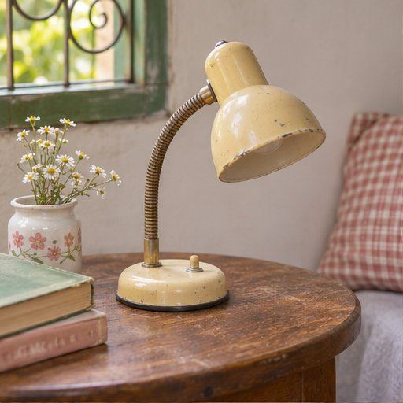
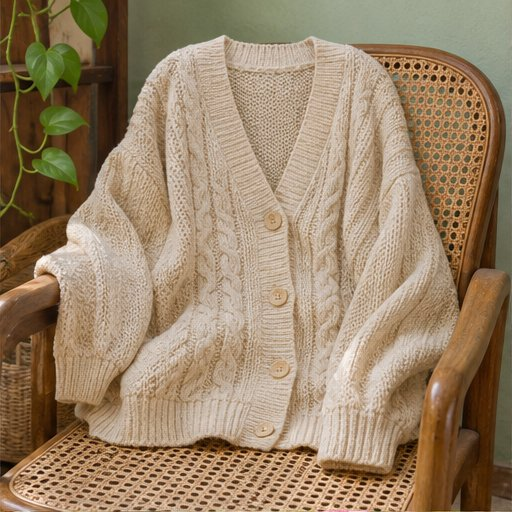
“Nhận sách mới biết
LỜI KỂ MẪU
chúng mình cùng khu.”
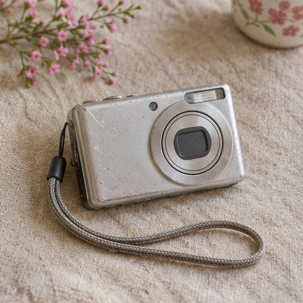
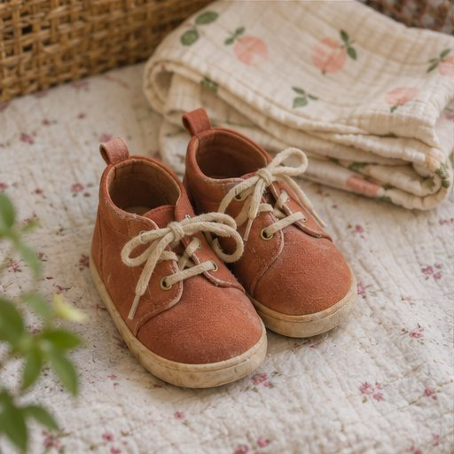
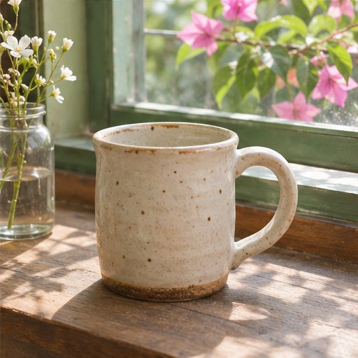
“Chiếc áo bé mặc
LỜI KỂ MẪU
được vài lần.
Vẫn còn xinh lắm.”
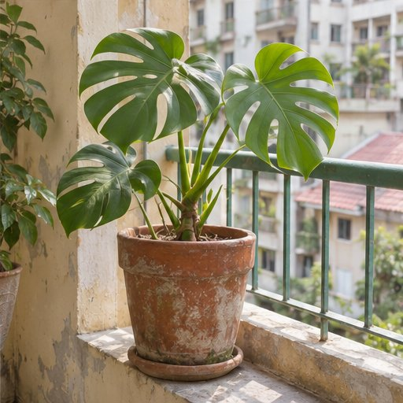
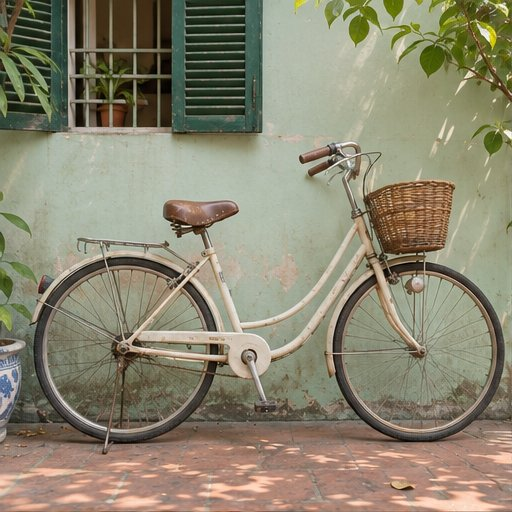
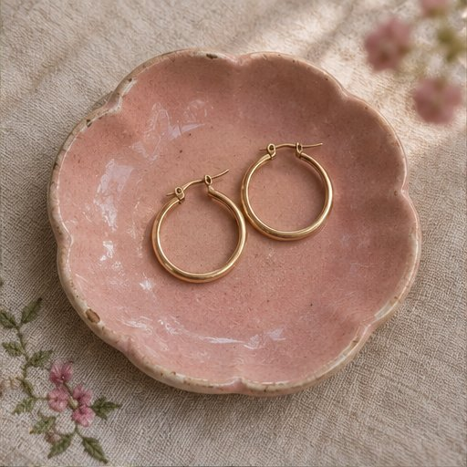
Nhỏ thôi.
MỖI MÓN ĐỒ, MỘT CƠ HỘI
Vẫn đáng
trao lại.
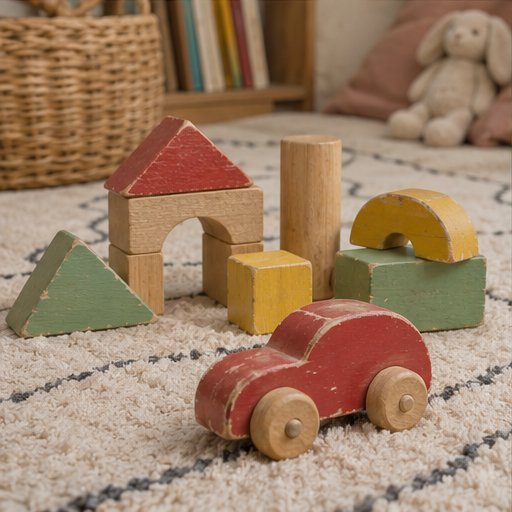
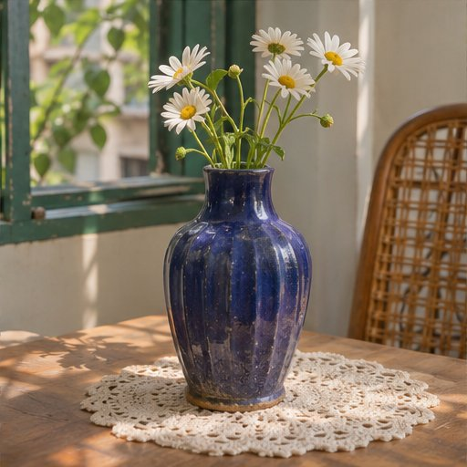
“Cảm ơn vì đã
LỜI KỂ MẪU
giữ gìn nó
đến lượt mình.”
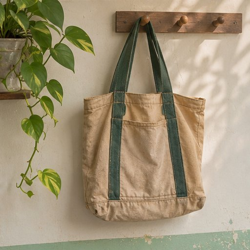
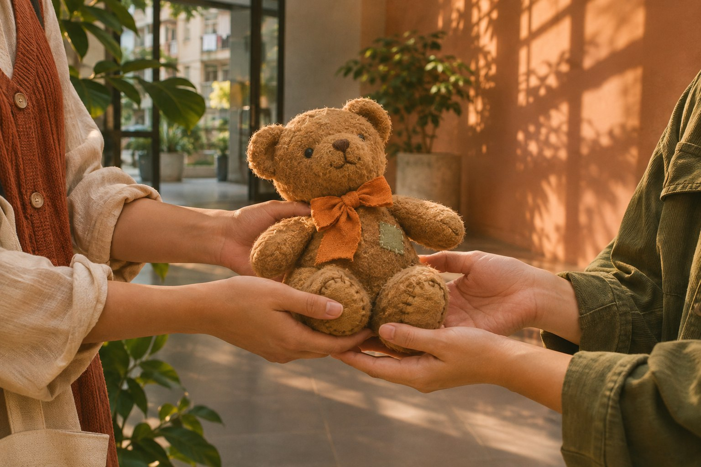
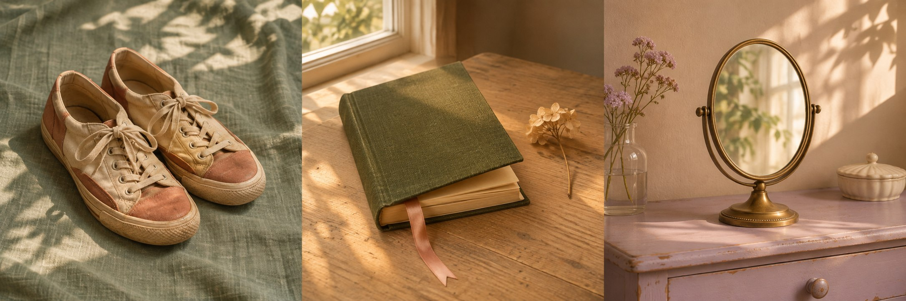
“Mình cần đúng
LỜI KỂ MẪU
chiếc gương này.”
Đồ cũ.
CÂU CHUYỆN TIẾP THEO CÓ THỂ LÀ CỦA BẠN
Người quen mới.
Một tin đăng. Một lời nhắn.
Một cuộc hẹn ở sảnh chung cư.
Gặp trực tiếp, xem món đồ, rồi quyết định.
Những cuộc trao đổi nhỏ, bắt đầu từ khu phố mình.
Khánh gặp Liên và Trang qua một nhóm Facebook. Tình cờ sống gần, trao đổi đồ rồi giữ liên lạc.
Passy bắt đầu từ mong muốn những cuộc gặp tốt đẹp như thế xảy ra nhiều hơn.
Toy Story gợi cho Khánh một cách nhìn rất dịu dàng: phía sau một món đồ có thể là cả một thế giới ký ức. Một chú gấu bông từng được ôm đi ngủ. Một món quà từng khiến ai đó vui suốt cả ngày.
Rồi chúng ta lớn lên, thay đổi, không còn cần những thứ từng gắn bó. Nhưng khi mình thôi sử dụng, liệu câu chuyện của chúng đã thật sự kết thúc?
Passy bắt đầu từ mong muốn: để một món đồ được yêu quý thêm lần nữa.
Cảm hứng cá nhân từ bộ phim · Gấu bông là minh họa riêng của Passy.Với Khánh, đó là đôi giày một người bạn tặng vào sinh nhật 18 tuổi. Giá trị của món quà nằm cả ở người đã tặng, ở cột mốc mà nó gợi về.
Những lần dọn nhà, nhìn lại những món thân thương bị bỏ xó, Khánh cứ nghĩ: mình vẫn trân trọng chúng, nhưng có lẽ ở một nơi khác, chúng còn có thể được dùng mỗi ngày.
Kỷ niệm vẫn ở lại với mình. Món đồ có thể bắt đầu một kỷ niệm khác.
Liên và Trang từng chạy theo những trào lưu thời trang nhanh. Khánh biết hai bạn khi tìm mua lại đồ qua một nhóm Facebook. Tình cờ, chúng tôi sống gần nhau.
Những cuộc trao đổi thuận lợi khiến cả ba giữ liên lạc. Rồi có món gì không dùng nữa, chúng tôi lại trao đổi cho nhau. Đồ tìm được người cần; chúng tôi có thêm những người quen.
Điều khiến chúng tôi muốn làm Passy chính là cảm giác ấy: một cuộc trao đổi nhỏ có thể mở ra một kết nối lâu dài.
Chúng tôi biết cảm giác giữ thì chật, bỏ lại tiếc. Biết cả những ngần ngại khi pass đồ trên mạng: khó tin nhau, không xem được trực tiếp, gửi đi rồi bị trả về.
Vì thế, chúng tôi chọn bắt đầu từ khoảng cách gần. Cùng xây dựng một nơi để người có đồ dễ đăng, người cần dễ tìm, hai bên nhắn nhau rồi hẹn gặp ở nơi thuận tiện.
Chúng tôi vẫn đang hoàn thiện Passy. Mong muốn ấy sẽ chỉ thành một cộng đồng khi có thêm bạn cùng tham gia.
Chúng tôi muốn giữ Passy gần gũi, thuận tiện, hướng tới miễn phí hoặc một khoản hoa hồng thật nhỏ để vận hành. Một nơi cả chiếc gương nhỏ hay đôi bông tai cũng có cơ hội được dùng tiếp.
Chúng tôi cần những người đầu tiên dùng thử, góp ý và rủ người quen tham gia. Mỗi món đồ được trao lại, mỗi lời giới thiệu của bạn đều giúp cộng đồng này có thêm một khởi đầu.
Cùng viết tiếp với PassyGửi Passy cho một người bạn.
Biết đâu, câu chuyện tiếp theo bắt đầu từ bạn.